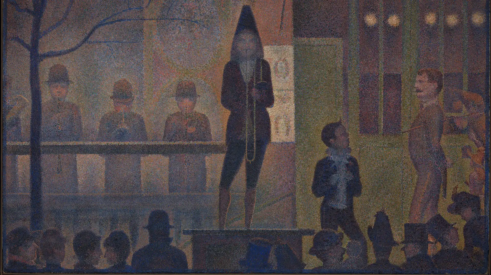

Log Zero  December 30, 2022 | Circus Sideshow The examined life is worth living; but at what cost?
Notepad Dec 30, 2022 - Reading an anthology on Literary Theory edited by Julie Rivkin and Michael Ryan. Oct 15, 2022 - Reading The Best American Essays edited by Louis Menand. It is an interesting collection to say the least.
Dec 30, 2022 - Reading an anthology on Literary Theory edited by Julie Rivkin and Michael Ryan. Oct 15, 2022 - Reading The Best American Essays edited by Louis Menand. It is an interesting collection to say the least.